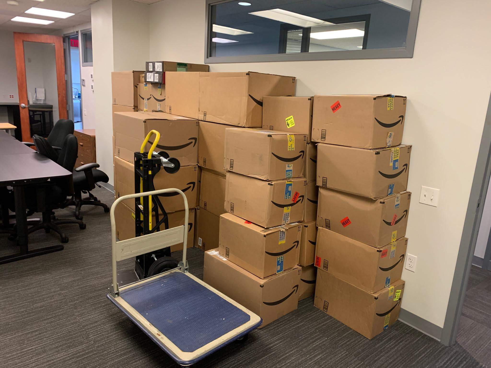

"Light" day
I went on another route with the same driver today. We meant to assign him an easy route since he had to work late last night, and he has been busting his butt all week. We assigned him a route with 4 stops and 45 packages. He pulled into the warehouse and to see 4 racks full of heavy, oversized packages. We also didn't have a dolly for him to use. I immediately offered to help him again. This was meant to be a light day for him. Not leg day. He managed to get one of his buddies to find him a dolly, but it’s not great. Beats making 21 trips carrying these packages by hand. The business had 2 more dollies for us to use, allowing us to make short work of the full van. We were loading up 9 packages per trip, having to beg one of the business's employees to let us in each time.
Though it seemed a bit daunting (to me) at first, we actually finished the bulk route super early. We then we went out to assist another driver so everyone could finish early and make it back for free catered dinner on Amazon’s dime.